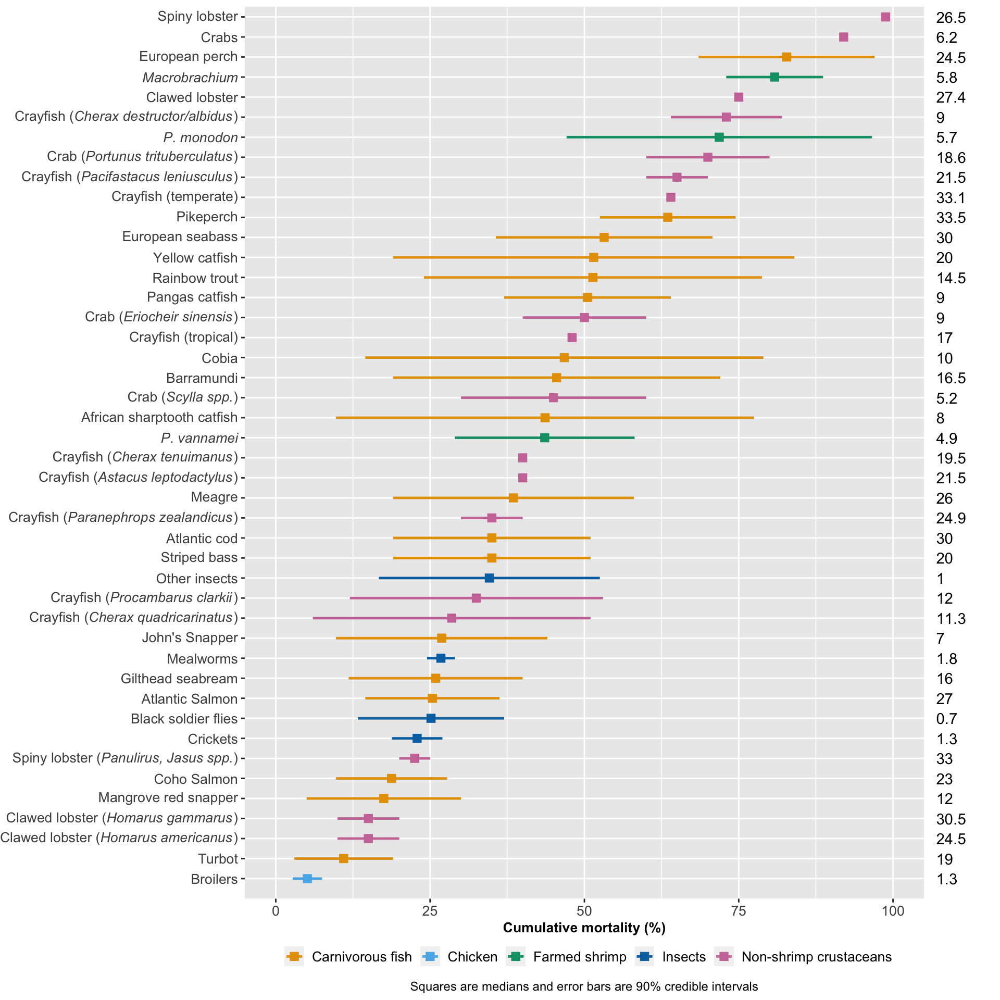
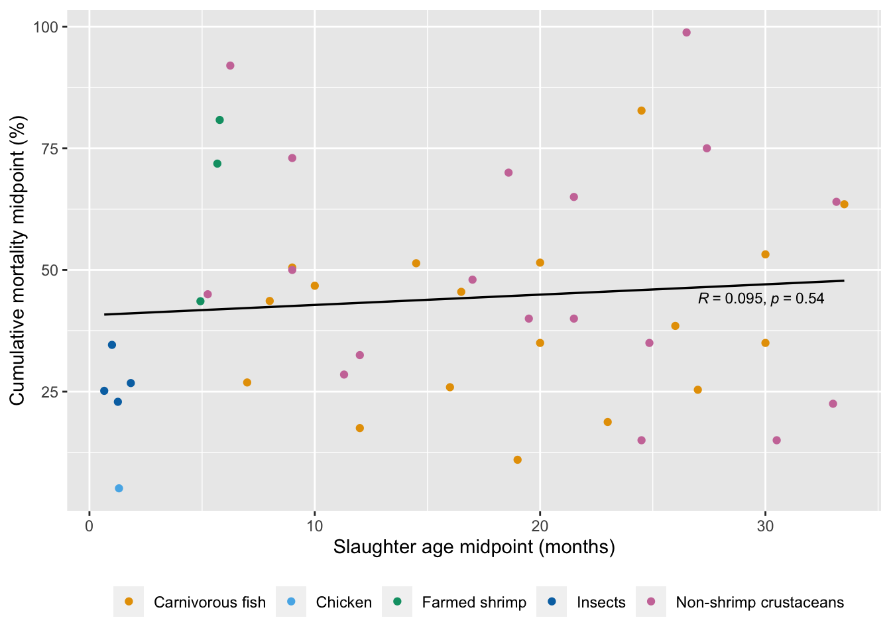
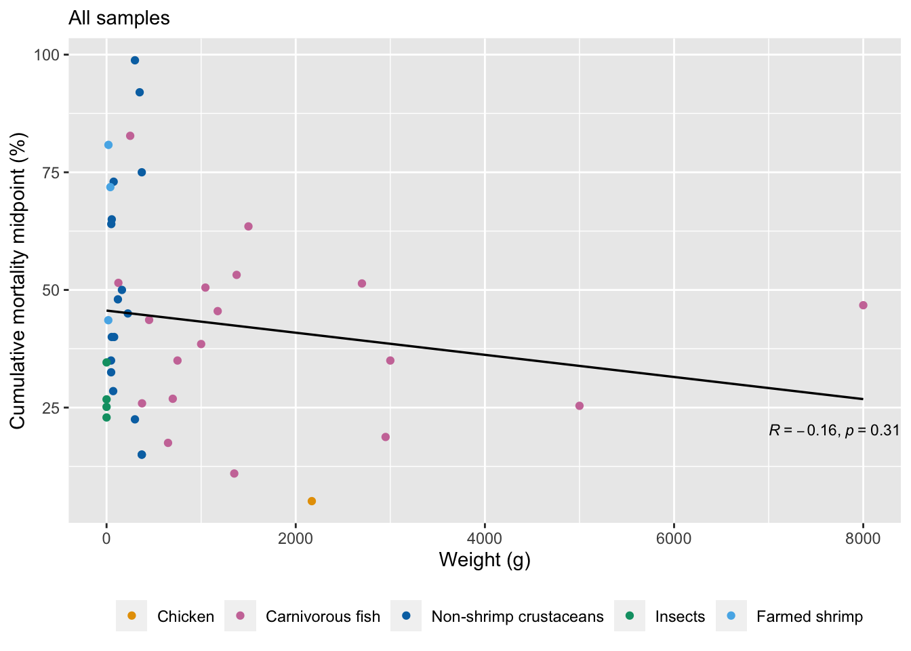
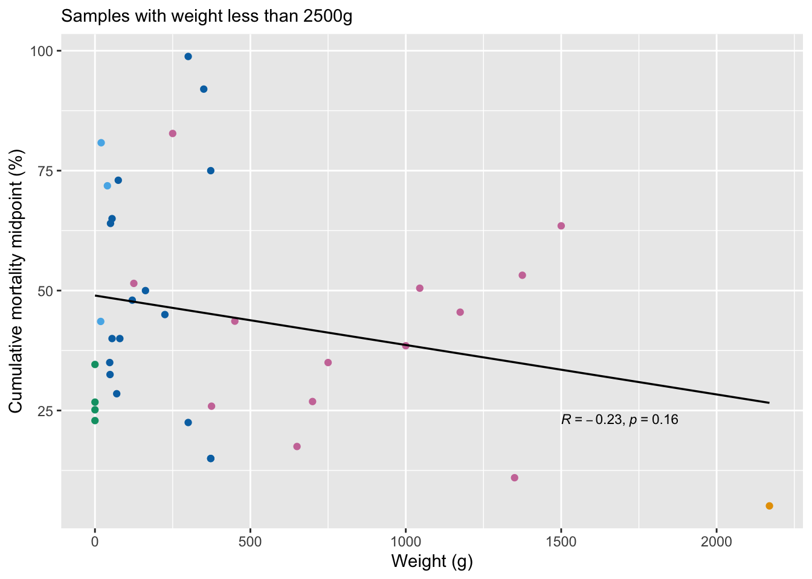
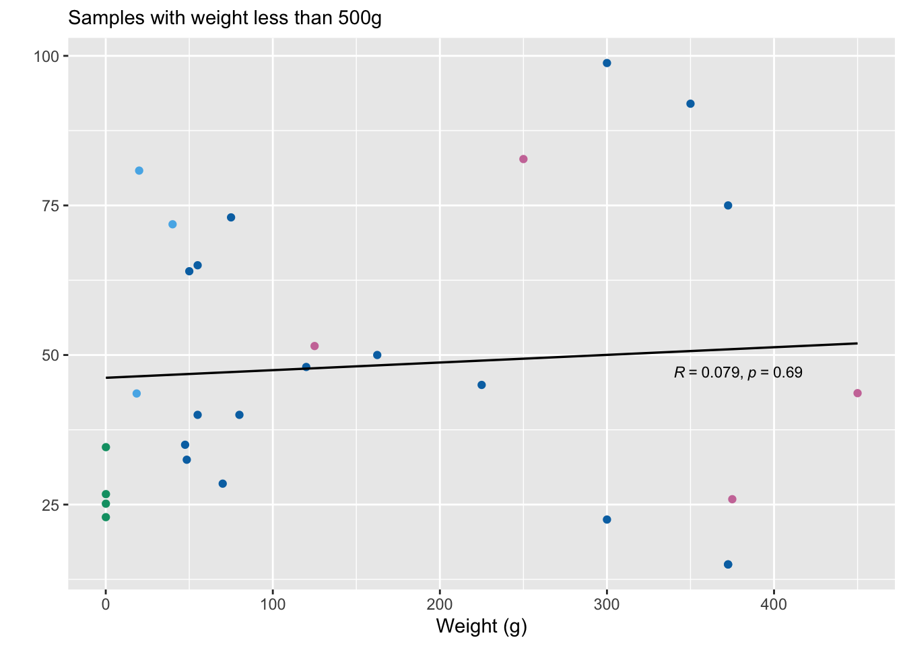
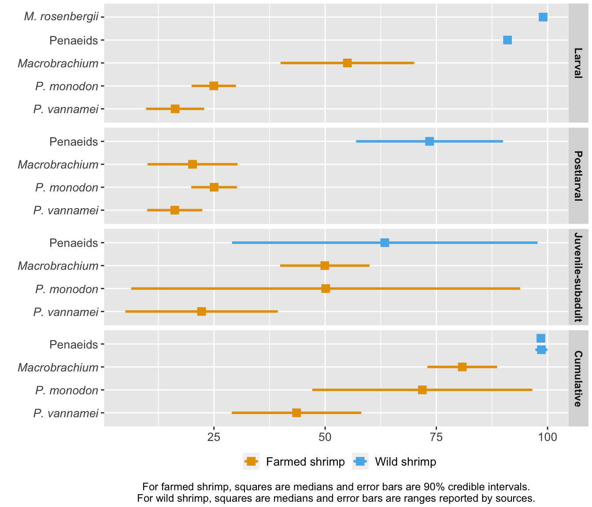

library(ggplot2)
library(dplyr)
library(tidyr)
library(scales)
library(ggthemes)
library(ggpubr)
library(kableExtra)
show.table=function(x){
kable(x, table.attr = 'data-quarto-disable-processing="true"') %>%
kableExtra::kable_styling(full_width=FALSE, position="center", font_size=12,
bootstrap_options = c("condensed"))
}3 Cross-species comparison
This chapter compares our estimates of farmed shrimp pre-slaughter mortality to the mortality rates of other farmed species and to wild shrimp.
Data for farmed shrimp are from the survival curves model. Other farmed species and wild shrimp are available in the file cross-species_data.csv (see the GitHub repository). Throughout, we take the midpoint of the lowest and highest reported mortality rates for each species. Sources for the data are as follows:
Chickens:
- Junghans et al. (2022, p.1, p.4) report 2.74%. We took the mean that they report.This is the lowest estimate we found, so we take this as our lower bound.
- FAO (2023, p.1) report a death rate of 7.5%. We take this as our upper bound.
- Leinonen and Kyriazakis (2013, Table 1) report rates of 3.5%, 4.1%, and 4.7%.
- National Chicken Council give a mortality rate of 5.3% for 2022.
- We report the median for chickens as the midpoint of the rates from Junghans et al. (2022) and FAO (2023).
- The slaughter age and weight we report for chickens is the median of all the slaughter ages and weights reported in the above sources.
Carnivorous fish: Welfare Footprint’s project on the Welfare of Farmed Fish. We use their 90% credible intervals for each species and also reported the midpoint of the intervals.
Non-shrimp crustaceans: Wickens and Lee (2002) Tables 4.6b–d and tables 4.6g–h.
Insects: Rowe (2020) reports “other deaths” in figures 3–6. We divided the upper bound of “other deaths” by the lower bound of “Total farmed” to get the largest mortality rate possible, and did the reverse to obtain the lowest rate. We also give the midpoint of the two resulting numbers.
Wild shrimp:
- Dall et al. (1991, Table 11.1). See the separate wild_shrimp.csv in the GitHub repository to see how calculate stage-specific and cumulative mortality rates using this data. We renamed “Juvenile” from the source as Postlarval and “Adult” as Juvenile-subadult to make the lengths of these stages most closely our match farmed shrimp data.
- Khomiak & Marchuk (2022) report 99% mortality for larval Macrobrachium shrimp, with no range so we take only the point estimate.
- South Carolina Department of Natural Resources report on the first page that “less than one or two percent of the eggs spawned survive to adults.” We report this as a cumulative mortality rate of 98%–99%, with a median of 98.5%.
The data set includes both cumulative and stage-specific mortality rates for various taxa. We use only the cumulative rates for comparison here, but leave the full data set available for anyone who wishes to explore the stage-specific rates that are available.
We begin by loading all the required packages and writing a function to print tables.
3.1 Loading and preparing data
We now load in the cross-species data. We also load and then build a data frame from the survival curves model so that we can compare our estimates of farmed shrimp mortality to the other species. Welfare footprint’s data represents 90% credible intervals so we make the data frame of farmed shrimp estimates with the same intervals. We will also look at the slaughter age of all these species, so we load the slaughter age estimates from the survival curves model, too.
See the GitHub repository for the .csv files used here.
# cross-species data
species.mort<-read.csv("../data/comparison/cross-species_data.csv", header=TRUE, sep=",")
# survival curves data
vannamei.cumulative<-read.csv("../data/survival_curves/vannamei_model_slaughter_probs.csv", header=TRUE, sep=",")
monodon.cumulative<-read.csv("../data/survival_curves/monodon_model_slaughter_probs.csv", header=TRUE, sep=",")
macro.cumulative<-read.csv("../data/survival_curves/macro_model_slaughter_probs.csv", header=TRUE, sep=",") # these are cumulative rates at each stage
bystage.farm.shrimp<-read.csv("../data/survival_curves/bystage_farmed_shrimp_model_probs.csv", header=TRUE, sep=",")
bystage.df<- split(bystage.farm.shrimp, bystage.farm.shrimp$species) # split up the farmed shrimp by species so we can calculate averages by species
bystage.vannamei<-bystage.df$vannamei
bystage.monodon<-bystage.df$monodon
bystage.macro<-bystage.df$macrobrachium # these are stage specific rates
vannamei_days<-read.csv("../data/survival_curves/vannamei_totalfarmed_days.csv", header=TRUE, sep=",")
monodon_days<-read.csv("../data/survival_curves/monodon_totalfarmed_days.csv", header=TRUE, sep=",")
macro_days<-read.csv("../data/survival_curves/macro_totalfarmed_days.csv", header=TRUE, sep=",") # these are the slaughter age estimates
# make a data frame of the mortality rates from the survival curves model, this time with 90% credible intervals, to match the other species data from Welfare Footprint
shrimp.mort<-data.frame(
Group=rep("Farmed shrimp", 12),
Species=rep(c("P. vannamei","P. monodon", "Macrobrachium"), 4),
Stage=c(rep("Cumulative", 3), rep("Larval", 3),
rep("Postlarval", 3), rep("Juvenile-subadult", 3)),
Stage.growout=c(rep("Cumulative", 3), rep("Pre-growout", 3),
rep("Growout", 6)),
Vertebrate=rep("Invertebrate", 12),
Aquatic=rep("Aquatic", 12),
Average=c(
(1-median(c(
quantile(vannamei.cumulative$slaughter.age, probs=0.05), # this time we need 90% credible intervals to match Welfare Footprint's method
quantile(vannamei.cumulative$slaughter.age, probs=0.95))))*100,
(1-median(c(
quantile(monodon.cumulative$slaughter.age, probs=0.05),
quantile(monodon.cumulative$slaughter.age, probs=0.95))))*100,
(1-median(c(
quantile(macro.cumulative$slaughter.age, probs=0.05),
quantile(macro.cumulative$slaughter.age, probs=0.95))))*100,
(median(c(
quantile(bystage.vannamei$larval, probs=0.05),
quantile(bystage.vannamei$larval, probs=0.95))))*100,
(median(c(
quantile(bystage.monodon$larval, probs=0.05),
quantile(bystage.monodon$larval, probs=0.95))))*100,
(median(c(
quantile(bystage.macro$larval, probs=0.05),
quantile(bystage.macro$larval, probs=0.95))))*100,
(median(c(
quantile(bystage.vannamei$postlarval, probs=0.05),
quantile(bystage.vannamei$postlarval, probs=0.95))))*100,
(median(c(
quantile(bystage.monodon$postlarval, probs=0.05),
quantile(bystage.monodon$postlarval, probs=0.95))))*100,
(median(c(
quantile(bystage.macro$postlarval, probs=0.05),
quantile(bystage.macro$postlarval, probs=0.95))))*100,
(median(c(
quantile(bystage.vannamei$juvenile.adult, probs=0.05),
quantile(bystage.vannamei$juvenile.adult, probs=0.95))))*100,
(median(c(
quantile(bystage.monodon$juvenile.adult, probs=0.05),
quantile(bystage.monodon$juvenile.adult, probs=0.95))))*100,
(median(c(
quantile(bystage.macro$juvenile.adult, probs=0.05),
quantile(bystage.macro$juvenile.adult, probs=0.95))))*100),
Lower=c(
(1-quantile(vannamei.cumulative$slaughter.age, probs=0.95))*100,
(1-quantile(monodon.cumulative$slaughter.age, probs=0.95))*100,
(1-quantile(macro.cumulative$slaughter.age, probs=0.95))*100,
quantile(bystage.vannamei$larval, probs=0.05)*100,
quantile(bystage.monodon$larval, probs=0.05)*100,
quantile(bystage.macro$larval, probs=0.05)*100,
quantile(bystage.vannamei$postlarval, probs=0.05)*100,
quantile(bystage.monodon$postlarval, probs=0.05)*100,
quantile(bystage.macro$postlarval, probs=0.05)*100,
quantile(bystage.vannamei$juvenile.adult, probs=0.05)*100,
quantile(bystage.monodon$juvenile.adult, probs=0.05)*100,
quantile(bystage.macro$juvenile.adult, probs=0.05)*100),
Upper=c(
(1-quantile(vannamei.cumulative$slaughter.age, probs=0.05))*100,
(1-quantile(monodon.cumulative$slaughter.age, probs=0.05))*100,
(1-quantile(macro.cumulative$slaughter.age, probs=0.05))*100,
quantile(bystage.vannamei$larval, probs=0.95)*100,
quantile(bystage.monodon$larval, probs=0.95)*100,
quantile(bystage.macro$larval, probs=0.95)*100,
quantile(bystage.vannamei$postlarval, probs=0.95)*100,
quantile(bystage.monodon$postlarval, probs=0.95)*100,
quantile(bystage.macro$postlarval, probs=0.95)*100,
quantile(bystage.vannamei$juvenile.adult, probs=0.95)*100,
quantile(bystage.monodon$juvenile.adult, probs=0.95)*100,
quantile(bystage.macro$juvenile.adult, probs=0.95)*100),
Slaught_midpoint=c(median(vannamei_days$total.farmed),
median(monodon_days$total.farmed),
median(macro_days$total.farmed),
rep(NA, 9)),
Unit=rep("Days", 12),
Slaught_midpoint_months=c(rep(c(median(vannamei_days$total.farmed)/30.5,
median(monodon_days$total.farmed)/30.5,
median(macro_days$total.farmed)/30.5), 4)),
Weight=(rep(c(median(c(11, 26)), median(c(20,60)), median(c(10,30))),4)),
Source=rep("Survival curves model", 12)
)
# join the survival curves data with the data for other species
mort<-plyr::rbind.fill(species.mort, shrimp.mort)
mortality.cumulative<-mort[mort$Stage=="Cumulative",] # while we collected stage-specific data, here we only need cumulative mortality rates
str(mortality.cumulative)'data.frame': 46 obs. of 18 variables:
$ Group : chr "Chicken" "Carnivorous fish" "Carnivorous fish" "Carnivorous fish" ...
$ Species : chr "Broilers" "Yellow catfish" "Cobia" "Striped bass" ...
$ Stage : chr "Cumulative" "Cumulative" "Cumulative" "Cumulative" ...
$ Stage.growout : chr "Cumulative" "Cumulative" "Cumulative" "Cumulative" ...
$ Vertebrate : chr "Vertebrate" "Vertebrate" "Vertebrate" "Vertebrate" ...
$ Aquatic : chr "Non-aquatic" "Aquatic" "Aquatic" "Aquatic" ...
$ Average : num 5.12 51.5 46.75 35 18.75 ...
$ Lower : num 2.74 19 14.5 19 9.75 14.5 52.5 19 19 19 ...
$ Upper : num 7.5 84 79 51 27.8 ...
$ Slaught_midpoint : num 40 20 10 20 23 27 33.5 26 30 16.5 ...
$ Slaught_lower : num NA 15 8 16 18 18 17 24 24 9 ...
$ Slaught_upper : num NA 25 12 24 28 36 50 28 36 24 ...
$ Unit : chr "Days" "Months" "Months" "Months" ...
$ Slaught_midpoint_months: num 1.31 20 10 20 23 ...
$ Slaught_lower_months : num NA 15 8 16 18 18 17 24 24 9 ...
$ Slaught_upper_months : num NA 25 12 24 28 36 50 28 36 24 ...
$ Weight : num 2170 125 8000 750 2950 ...
$ Source : chr "Lower: Junghans et al., 2022; Upper: FAO, 2023; Other sources: National Chicken Council and Leinonen and Kyriazakis, 2013" "Welfare footprint" "Welfare footprint" "Welfare footprint" ...3.2 Farmed taxa
Now we can plot the results, comparing mortality across species.
mortality.ordered<-mortality.cumulative[!mortality.cumulative$Group=="Wild shrimp",] %>%
arrange(Average) # remove wild shrimp and order by average mortality
mortality.ordered$Slaught_midpoint_months<-round(mortality.ordered$Slaught_midpoint_months, 1) # round slaughter ages to one decimal place (these will be shown next to the graph)
mortality.ordered$Species<-factor(mortality.ordered$Species, levels=unique(mortality.ordered$Species)) # make sure the species names is a factor variable
# to make the label formats correct we need to italicize some species names
spec_labs<-c(
"Broilers", "Turbot",
expression(paste("Clawed lobster (",italic("Homarus americanus"),")")),
expression(paste("Clawed lobster (",italic("Homarus gammarus"),")")),
"Mangrove red snapper","Coho Salmon",
expression(paste("Spiny lobster (",italic("Panulirus, Jasus spp."),")")),
"Crickets", "Black soldier flies", "Atlantic Salmon", "Gilthead seabream",
"Mealworms", "John's Snapper",
expression(paste("Crayfish (",italic("Cherax quadricarinatus"),")")),
expression(paste("Crayfish (",italic("Procambarus clarkii"),")")),
"Other insects", "Striped bass", "Atlantic cod",
expression(paste("Crayfish (",italic("Paranephrops zealandicus"),")")),
"Meagre",
expression(paste("Crayfish (",italic("Astacus leptodactylus"),")")),
expression(paste("Crayfish (",italic("Cherax tenuimanus"),")")),
expression(paste(italic("P. vannamei"))),
"African sharptooth catfish",
expression(paste("Crab (",italic("Scylla spp."),")")),
"Barramundi", "Cobia",
"Crayfish (tropical)",
expression(paste("Crab (",italic("Eriocheir sinensis"),")")),
"Pangas catfish", "Rainbow trout", "Yellow catfish", "European seabass",
"Pikeperch", "Crayfish (temperate)",
expression(paste("Crayfish (",italic("Pacifastacus leniusculus"),")")),
expression(paste("Crab (",italic("Portunus trituberculatus"),")")),
expression(paste(italic("P. monodon"))),
expression(paste("Crayfish (",italic("Cherax destructor/albidus"),")")),
"Clawed lobster",
expression(paste(italic("Macrobrachium"))),
"European perch", "Crabs", "Spiny lobster")
# now we can plot the results
cross_species<-ggplot(mortality.ordered, aes(y = Species, x=Average)) +
geom_pointrange(aes(color=Group, xmin=Lower, xmax=Upper), shape="square",
size=.6, linewidth=.85) +
scale_color_manual(values=c("#E69F00", "#56B4E9", "#009E73", "#0072B2", "#CC79A7", "#000000")) +
coord_cartesian(xlim=c(0,100), ylim=c(0,44.5), clip = 'off') +
geom_text(aes(y=Species, x=107,
label=formatC(Slaught_midpoint_months, format="fg"), hjust=0),
na.rm=TRUE, fontface="plain") +
annotate(geom="text", y=44/2, x=119, angle=270, fontface="bold",
label="Slaughter age (months)") +
scale_x_continuous(expand=c(0,5)) +
scale_y_discrete(expand=c(0,0), labels=spec_labs) +
labs(caption="Squares are medians and error bars are 90% credible intervals",
x="Cumulative mortality (%)", y="") +
theme(plot.margin=margin(r=55, l=0, t=5, b=5),
legend.position="bottom",
legend.title=element_blank(),
legend.key.size = unit(5, "mm"),
legend.text=element_text(size=10, hjust=0),
legend.spacing.x = unit(2, "mm"),
plot.caption = element_text(hjust = .5, size=9),
axis.text=element_text(size=10),
axis.title.x=element_text(size=10, face="bold"),
axis.title.y=element_blank(),
legend.box.spacing = unit(1, "mm"),
panel.spacing = unit(1.5, "mm"))
cross_species
#ggsave(cross_species, file="cross-species.png", width=8, height=9.5, unit="in")3.2.1 Analysing other characteristics
Next, we analyse whether other characteristics of these farmed species are related to their mortality rates.
3.2.1.1 Slaughter age
Is the length of a production cycle related to cumulative mortality rate across species?
mortality.unordered<-mortality.cumulative # to test if there are correlations we need the data set to be unordered
mortality.unordered<-mortality.unordered[!mortality.unordered$Group=="Wild shrimp",]
ggplot(mortality.unordered, aes(x=Slaught_midpoint_months, y=Average)) +
geom_point(aes(x=Slaught_midpoint_months, y=Average, color=Group)) +
geom_smooth(aes(x=Slaught_midpoint_months, y=Average), method = "lm", se = FALSE,
linetype="solid", color="#000000", linewidth=.6) +
stat_cor(label.x=27, label.y=44, size = 3)+
labs(y="Cumulative mortality midpoint (%)", x="Slaughter age midpoint (months)")+
scale_color_manual(values=c("#E69F00", "#56B4E9", "#009E73", "#0072B2", "#cc79a7", "#000000"))+
theme(legend.position="bottom",
legend.title=element_blank())
cor.test(mortality.unordered$Slaught_midpoint_months, mortality.unordered$Average, alternative="two.sided", method="spearman")
Spearman's rank correlation rho
data: mortality.unordered$Slaught_midpoint_months and mortality.unordered$Average
S = 12885, p-value = 0.5528
alternative hypothesis: true rho is not equal to 0
sample estimates:
rho
0.0919443 3.2.1.2 Weight
We look at the correlation between weight at slaughter and pre-slaughter mortality. We also examine this pattern after removing outliers above 2500g and 500g.
w1<-ggplot(mortality.unordered, aes(x=Weight, y=Average)) +
geom_point(aes(x=Weight, y=Average, color=Group)) +
geom_smooth(aes(x=Weight, y=Average), method = "lm", se = FALSE,
linetype="solid", color="#000000", linewidth=.6) +
stat_cor(label.x=7000, label.y=20, size = 3)+
labs(y="Cumulative mortality midpoint (%)", x="Weight (g)", subtitle="All samples")+
scale_color_manual(values=c("#E69F00", "#cc79a7", "#0072B2", "#009E73", "#56B4E9"),
limits=unique(mortality.unordered$Group)) +
theme(legend.title=element_blank(),
legend.position="bottom")
# plot the results removing outliers above 2500g
w2<-ggplot(mortality.unordered[mortality.unordered$Weight<2500,], aes(x=Weight, y=Average)) +
geom_point(aes(x=Weight, y=Average, color=Group)) +
geom_smooth(aes(x=Weight, y=Average), method = "lm", se = FALSE,
linetype="solid", color="#000000", linewidth=.6) +
stat_cor(label.x=1500, label.y=23, size = 3)+
labs(y="Cumulative mortality midpoint (%)", x="Weight (g)", subtitle="Samples with weight less than 2500g")+
scale_color_manual(values=c("#E69F00", "#cc79a7", "#0072B2", "#009E73", "#56B4E9"),
limits=unique(mortality.unordered$Group))+
theme(legend.title=element_blank(),
legend.position="none")
# plot the results removing outliers above 500g
w3<-ggplot(mortality.unordered[mortality.unordered$Weight<500,], aes(x=Weight, y=Average)) +
geom_point(aes(x=Weight, y=Average, color=Group)) +
geom_smooth(aes(x=Weight, y=Average), method = "lm", se = FALSE,
linetype="solid", color="#000000", linewidth=.6) +
stat_cor(label.x=340, label.y=47, size = 3)+
labs(y="", x="Weight (g)", subtitle="Samples with weight less than 500g")+
scale_color_manual(values=c("#E69F00", "#cc79a7", "#0072B2", "#009E73", "#56B4E9"),
limits=unique(mortality.unordered$Group))+
theme(legend.title=element_blank(),
legend.position="none")
w1
w2
w3


We also calculate Spearman’s rho for these three analyses.
# calculate correlations between weight and mortality
cor.test(mortality.unordered$Weight, mortality.unordered$Average, alternative="two.sided", method="spearman")Warning in cor.test.default(mortality.unordered$Weight,
mortality.unordered$Average, : Cannot compute exact p-value with ties
Spearman's rank correlation rho
data: mortality.unordered$Weight and mortality.unordered$Average
S = 14947, p-value = 0.4111
alternative hypothesis: true rho is not equal to 0
sample estimates:
rho
-0.128607 # calculate correlations after removing outliers in the data
weight.restricted<-mortality.unordered[mortality.unordered$Weight<2500,]
cor.test(weight.restricted$Weight, weight.restricted$Average, alternative="two.sided", method="spearman")Warning in cor.test.default(weight.restricted$Weight,
weight.restricted$Average, : Cannot compute exact p-value with ties
Spearman's rank correlation rho
data: weight.restricted$Weight and weight.restricted$Average
S = 9923.9, p-value = 0.6082
alternative hypothesis: true rho is not equal to 0
sample estimates:
rho
-0.08588319 weight.small<-mortality.unordered[mortality.unordered$Weight<500,]
cor.test(weight.small$Weight, weight.small$Average, alternative="two.sided", method="spearman")Warning in cor.test.default(weight.small$Weight, weight.small$Average,
alternative = "two.sided", : Cannot compute exact p-value with ties
Spearman's rank correlation rho
data: weight.small$Weight and weight.small$Average
S = 3225, p-value = 0.5519
alternative hypothesis: true rho is not equal to 0
sample estimates:
rho
0.1173973 3.3 Wild shrimp
Finally, we compare farmed shrimp mortality to wild shrimp mortality.
# wild shrimp v farmed shrimp
wildshrimp.mort<-species.mort[species.mort$Group=="Wild shrimp",] # keep only wild shrimp from the full data set
farm.wild.mort<-plyr::rbind.fill(shrimp.mort, wildshrimp.mort) # combine farmed and wild shrimp data
farm.wild.mort$Stage<-factor(farm.wild.mort$Stage, levels=c("Larval", "Postlarval", "Juvenile-subadult", "Cumulative")) # make the life stages a factor and order them correctly
farm.wild.mort$Species<-factor(farm.wild.mort$Species, levels=unique(farm.wild.mort$Species)) # make the species name a factor
# plot the results
wild.farm<-ggplot(farm.wild.mort, aes(x=Average, y=Species, color=Group)) +
geom_pointrange(aes(xmin=Lower, xmax=Upper), shape="square",
size=.7, linewidth=1, position=position_dodge2(width=1, padding=2)) +
labs(caption="For farmed shrimp, squares are medians and error bars are 90% credible intervals.\nFor wild shrimp, squares are medians and error bars are ranges reported by sources.", x="Mortality (%)", y="") +
scale_color_manual(values=c("#E69F00", "#56B4E9")) +
facet_grid(Stage~., scales="free_y", space="free_y")+
scale_y_discrete(labels=c(
expression(italic("P. vannamei")),
expression(italic("P. monodon")),
expression(italic("Macrobrachium")),
"Penaeids", expression(italic("M. rosenbergii")), expression(italic("P. setiferus"))
))+
theme(legend.position="bottom",
legend.title=element_blank(),
legend.key.size = unit(5, "mm"),
legend.text=element_text(size=10, hjust=0),
legend.spacing.x = unit(2, "mm"),
strip.text = element_text(size = 9, face="bold"),
plot.caption = element_text(hjust = .5, size=9),
axis.text=element_text(size=10),
axis.title.y=element_text(size=10, face="bold"),
axis.title.x=element_blank(),
legend.box.spacing = unit(1, "mm"),
plot.margin = unit(c(1,1,1,1), "mm"),
panel.spacing = unit(1.5, "mm"))
wild.farm
3.4 Data and method limitations
Among the sources used to compare shrimp mortality to other taxa, there is no standardized measurement of mortality—for example, there were no standard procedures for whether ranges are standard errors, standard deviations, confidence intervals, or something else.
Some sources were missing life stages. For example, we found no reliable data on insect mortality broken down by life stage. Additionally, the carnivorous fish data did not cover larval mortality (Welfare Footprint), so fish mortality is likely higher than we reported. It is also possible that mass-mortality events where entire populations die are not included in the figures or included in some sources and not others.
For wild shrimp data, we relied almost entirely on estimations of penaeids generally. Finally, where we had to rely on industry sources, as opposed to academic ones, numbers may be biased and may be based more on ‘gut feeling’ estimations rather than empirical insights.